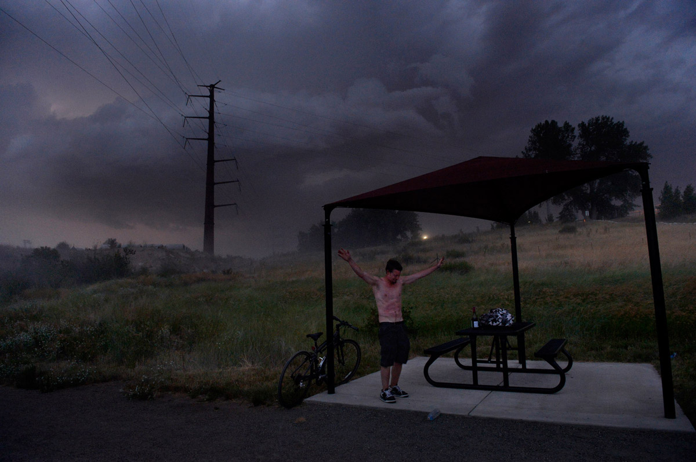
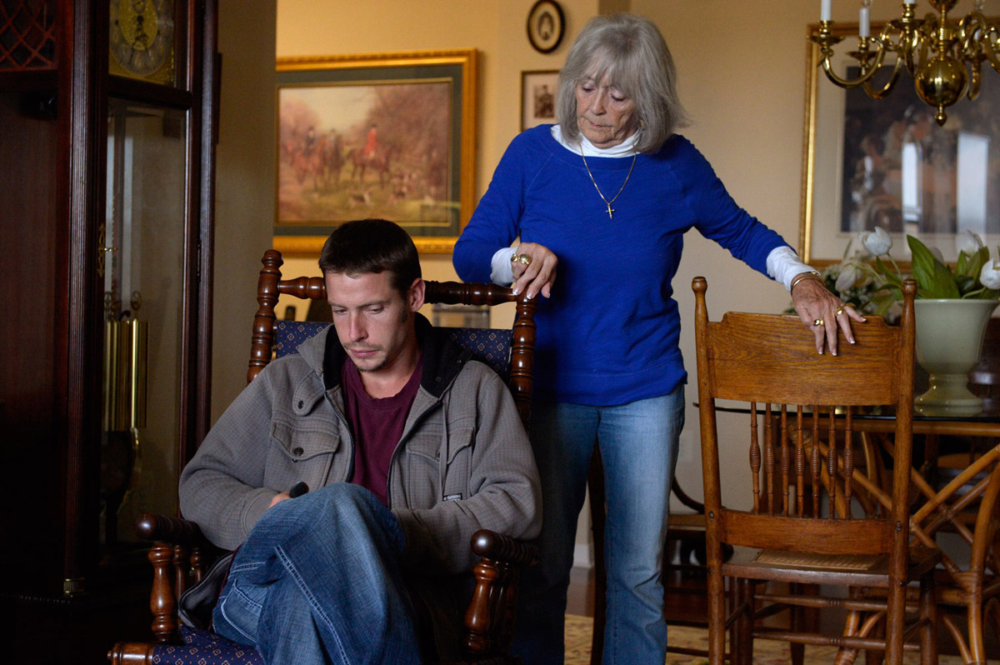

Timothy Unraveled by bipolar disorder, addiction
Timothy Heckler’s mind never rests. As a child, his grandmother says he was always on the go, never focusing on one thing at a time. Now he bounces between rehab centers, courtrooms, jail cells, homeless camps and his grandmother’s floor. He is always searching for something, and at the same time, failing to grasp the help within his reach. WARNING: This video contains graphic language.
A sinister storm is rumbling and sparking behind Timothy Heckler’s silhouette as he tears off his T-shirt on a warm July night and chugs Fat Bastard pinot noir from the bottle.
Ferocious wind pelts his bare chest with dirt and pebbles. Rain slaps him. The trees next to his Littleton campsite along the High Line Canal Trail are bent by the gusts. Timothy clenches his fist, turns his back to the storm and shouts, “The weather speaks to me!”
Besides the sale-price wine, his backpack contains a paperback on leadership and — in case it rains all night while he sleeps outside — a tarp. He doesn’t have to sleep here; he could stay with his grandmother or friends. But Timothy, 29, and his grandmother fought earlier: “This whole situation doesn’t require her understanding,” he says. He is out here to “cleanse,” to “gain clarity” and to “feel free against the noose I’ve hung myself with.”

Timothy Heckler turns his back to the violent wind and rain while searching for a place to set up camp for the night along the High Line Canal Trail in Littleton. After losing his spot in a group home and spending a week on a friend’s couch, Timothy says he needs to “gain clarity.”
“On homeless days such as these,” he wisecracks, because he can’t be serious for longer than two minutes, “I prefer to kick back, relax, crack open a book and open a bottle of wine.”
This night, among croaking frogs and summer rain, is a turning point, when a lifetime of mental illness and drug abuse seem to suck him under. It’s what happens when the mental health system fails, and when someone won’t help himself.
Here, surrounded by the excitement of a wild storm, it hasn’t hit him yet how deep in trouble he is. It seems like an adventure as he outlasts all the others who went scrambling for their cars when the rain came — the fishermen, cyclists, the hand-holding teenagers.
Timothy drinks his dinner and falls to sleep in his rain gear under the canopy of a wet tree.
It’s the booze that started this mess.
Last spring, Timothy walked into mental health court, sent there for deranged and drunken behavior that culminated in his arrest for spitting on a light-rail station security guard. It was a form of probation that required him to get mental health treatment.
But after weeks of failed drug tests — despite the frozen urine he kept in box of White Castle hamburgers and carried with him on his bicycle to drug tests — he was told he had 24 hours to pack up his apartment for rehab.
Timothy was already on the manic side of his bipolar disorder, so the news sent him spinning.
Timothy pulls himself out of bed at his apartment in the Capitol Hill neighborhood of Denver. He says he hasn’t been sleeping well recently and wakes up in the middle of the night. Timothy says he has suicidal thoughts at times. “Do I want to do it? No, I can’t quit until the miracles happen.”
He had to pack everything he owned out of his studio apartment — one strewn with the works of Socrates and comic books, and decorated with posters of Kim Basinger and random philosophical thoughts scrawled on paper pinned to the walls. He had to smoke the rest of his crystal meth.
Timothy walked and talked in circles. He lit his meth pipe and blew smoke rings into the mirror on the wall. He stacked his best vinyls, including the Beatles’ “Abbey Road,” tied them in a bundle, and ran out in the rain to sell them to a record store. He tore apart his apartment looking for a suitcase.
The floor was littered with dumbells, dirty socks and a law textbook. The kitchen sink was overflowing with dirty dishes. Bagels and Ramen noodles were the only food.
A sign on his wall said: “I am not like the others.”
That day, his grandmother, Fern Bechtel, “died inside” when she saw the apartment, which looked nothing like it had six months earlier when she helped him move in. She sat in the corner, watching him unravel, thanking God he was going to rehab before the drugs killed him.
“I don’t think he would make it through this,” she said, poking her head in the kitchen and seeing the mess. “This isn’t Tim. How can 30 days change 28 years?”
Timothy is a gourmet chef, can julienne carrots with the flick of a knife and whip up parmesan risotto without a recipe. He wears gel in his short light-brown hair, and sweater vests and bow ties when he is job hunting or going to court.
His grandmother is speechless.
She weeps as he gets high.
Timothy takes a hit of crystal meth at his apartment. Timothy was in a panic after being told he had less than 24 hours to report to a rehab facility. He doesn’t want his drugs to go to waste.
Troubled childhood
Something was wrong with Timothy’s brain before he even started school.
In kindergarten, a doctor recommended he take attention-deficit disorder medication. The boy was always running wild, wanted to know “everything about everybody and about the world and how it worked,” remembered his grandmother.
He also was the most loving of her grandchildren, caring for an uncle in a wheelchair. His grandparents thought he was brilliant, especially with a computer or an Erector set. Timothy was a loner, and they paid for karate lessons in the hopes he would find friends. It didn’t work.
Timothy’s parents, who divorced when he was a preschooler, were alcoholics, he said. Nowadays, he speaks little to his dad, who lives in Denver, and his mother lives in Oregon.
Since childhood, he has been medicated: first Ritalin, then Wellbutrin and, most recently, Depakote to control the bipolar swings between stay-in-bed-for-days depression and freaking-out mania that sends his thoughts spinning so fast that he can’t capture them. He doesn’t like how he feels on prescription drugs, though. He is lured by the immediate calming and euphoric effects of alcohol, meth, cocaine and heroin.
After high school in Bend, Ore., Timothy went to culinary school for a year, then moved to Denver and got a job at Rioja, one of the city’s most-respected restaurants in Larimer Square. But it didn’t last, probably because Timothy told professional chefs how to cook. He couldn’t filter his words before they came flying out of his mouth.
There was a long string of jobs. A year-long stint at a Lakewood pizza joint was the longest. Then another culinary school in Keystone that, as Timothy puts it, didn’t last because there was “too much cocaine, booze, Australians and Brazilians.”
He worked at King Soopers for nearly a year, a job that ended after he gave his boss a box of bullets for Christmas. It wasn’t a threat, Timothy says. It was a “creative gift,” one he thought his outdoorsy boss would appreciate.

Timothy sits with his grandmother, Fern Bechtel, at her home in Highlands Ranch in September. A day earlier, Timothy was ready to call it quits. “I’d rather just get the courage, or lack of courage, and just (expletive) get rid of myself. I’m done. There’s too much going on for me to keep any sort of focus,” he said.
Timothy was drinking heavily one night in April 2012 and came to his grandmother’s house combative and “totally loaded” on alcohol. She asked him to leave. Walking drunk, he stepped into traffic at South Wadsworth Boulevard and West Belleview Avenue and was struck by a Cadillac SUV. The crash broke five ribs and fractured his pelvis and two vertebrae. It also gave him a head injury, which he says made his mental state worse. Timothy spent months hospitalized and in a recovery center.
He says he stayed sober for 18 months, until Father’s Day 2013, when he was angry at his dad and drank two beers.
It soon turned into “total relapse.”
On another night of drunken stupor, after “beers and beers and beers,” Timothy stumbled out of a club and was stopped by a security officer at a light-rail station. He spit in the man’s face.
Timothy was charged with obstruction, and instead of jail time, he was offered a spot in Denver County’s Court to Community program for offenders with mental illness. Through the program, he was linked with a case manager at the Mental Health Center of Denver and started therapy.
When his mood was up, he applied for jobs. He went through them like tissue — at a hardware store and then signing people up for government-funded cellphones.
And when he was down, he stayed in bed for days straight, chain smoking without getting out of bed, burning holes in his sheets.
“I still feel terribly lonely,” he says. “I’ve alienated myself for 29 years. But I’m still feeling wild inside.”
Struggle to stay sober
Twenty-one days sober.
Timothy had one or two great runs of sobriety while living at the rehab group home for people with mental illness and substance abuse, once staying clean three weeks straight.
This was after the time he walked to the motel next door and ended up smoking meth, and after the time he and another resident went to a liquor store for rum and Coke and — “no joke” — ended up finding a bag of cocaine on the ground, which led to a nighttime binge on heroin and cocaine. They polished it off with methadone the next day.
During his month in rehab, he was required to show up in court every Thursday afternoon with the rest of the Court to Community offenders with mental illness.
One week last summer, as Timothy read “Leadership Secrets of Attila the Hun” before his court appearance, he was proud of his sobriety and having avoided a near-breakdown. He ran into a “dude” on the bus who used to smoke meth with him, but Timothy stayed on the bus and rode it all the way back to the group home instead of getting off with his old friend.
Timothy alternates between calling therapy a waste of time — complaining he’s treated like a guinea pig — and a benefit that is helping him sort out his mind. The judge asks him to keep a journal on a notebook in his back pocket, to write in it whenever he is about to act on impulse.
“I’m habitually unsuccessful in my jobs, my relationships. I’d rather choose the path of most resistance,” Timothy says.
He is fighting with the psychiatrist from the mental health center about her diagnosis and medication. He had been taking Depakote but didn’t like how it made him feel. Now he refuses to take anything. And he’s angrier, more volatile, on edge.
“You need to take your medication as it’s prescribed to you,” Judge Johnny Barajas tells him. “You seem more disorganized than you were two weeks ago.”
“No, I’ve been disorganized for years now,” Timothy says.
As time passes, he seems crazed by the detox and agitated by life in the group home.
Timothy loses his bed at the rehab house within two months.
Again, it was his mouth.
Timothy carries all his belongings with him after being kicked out of a group home in Aurora in July. Timothy said he lost his spot at the facility because he questioned the treatment he was receiving. “I hate being in this position, you have to ask people for help. Calling my family, it even seems monotonous to me. That’s all I do is call them for help,” he says.
“I was questioning their psychotherapy, mostly because I felt like I wasn’t getting the therapy that I was voluntarily signed up for. They shifted blame and responsibility to me.”
Soon after, Timothy asks the judge to release him from the Court to Community program.
“I could order mental health treatment, but I’m going to leave that up to you,” the judge tells him. “Good luck.”
The only good thing to come out of his four weeks at rehab, Timothy says, is that he’s “off the tweek,” meaning meth. “They just wrote (expletive) about me that soiled my name. They were constantly minimizing me.”
He goes to stay with friends, where there is “too much booze and too many cokeheads.”
Timothy is drinking again within days. He stays off the “tweek” for a couple more weeks.
Living with friends turns into a meth fest. He fights with his grandmother, who cries because he has been kicked out of rehab. He retreats to the woods.
This is how he ended up living outside.
Homeless and alone
Timothy spit on a Lexus because the driver cut him off on his bicycle, on which the water bottle holder holds a paper coffee cup of bourbon.
Already thin, he has lost 15 pounds in the last two months. His face is scruffy. In rare form, he has no hair gel to muss his light-brown hair. It’s the middle of a rainy September afternoon, and he is drinking bourbon as he sits on a Starbucks patio, chain smoking.
He has slept outside, most recently in the woods off Morrison Road, for months. The “cleanse” in Littleton turned into nights sleeping in an extra room he rented from an acquaintance or on an air mattress at his grandmother’s apartment. Soon, he alienated his friends and didn’t want to hear his grandmother’s advice.
Now he has a camp out in the weeds.
Timothy sleeps at his campsite in Lakewood in September. He had barely slept for two weeks. “I was coming down from massive mental and physical overload,” he says.
He has so many plans in his head that he can’t act on any of them. He wants a job, but not washing dishes. He didn’t get a job in the kitchen at his grandmother’s assisted-living center after a background check turned up his arrest history. He needs an apartment. And money. And a new gearshift for his bike. A new life plan.
“I just have several hundred ideas at any given moment,” he says. “I don’t know which direction to take. I am not in a hurry to get nowhere. I am in a hurry to get somewhere.”
One of his ideas is to become a “real bum,” he says, partly joking.
“I want to make a sign, but it really takes some audacity to be a bum like that.”
He found a job at a car wash. He lasted three days and stopped showing up. He was kicked out of his campsite by the man who owns the property.
“I’m lost in this sea of cars and fuel and lack of prosperity,” Timothy says.
A few weeks later, on a day in October, Timothy shows up at his grandmother’s assisted-living center on his bicycle. He is cold, exhausted and starving. He sleeps for three days. She stuffs him with scrambled eggs, twice-baked potatoes and pizza.
On the third night, Fern sits on the edge of her grandson’s air mattress and tells him he can’t go on living like this.
Timothy admits he thinks about how he could hang himself. Thinks about it often.
In the morning, Fern drives him to Littleton Adventist Hospital and asks for help. She tells them Timothy needs in-patient psychiatric care, that he is planning how to die.
His stay at the emergency room lasts about five hours. They send him away with a list of mental health clinics.
It’s back to the streets. Another binge.